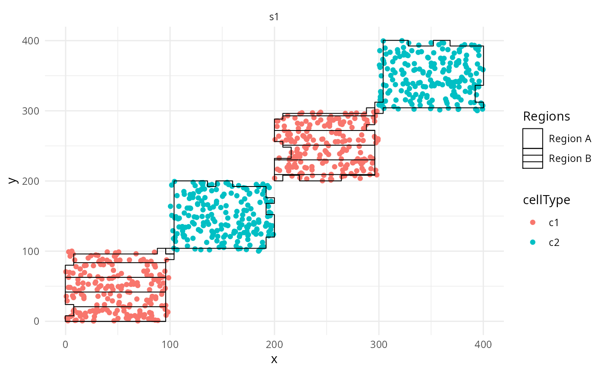

Region scale constructor.
Arguments
- aesthetics
The names of the aesthetics that this scale works with
- ...
Arguments passed on to discrete_scale
- guide
A function used to create a guide or its name. See guides() for more info.
- values
a set of aesthetic values to map data values to. If this is a named vector, then the values will be matched based on the names. If unnamed, values will be matched in order (usually alphabetical) with the limits of the scale. Any data values that don't match will be given na.value.
Examples
library(spicyR)
## Generate toy data
set.seed(51773)
x <- round(c(runif(200),runif(200)+1,runif(200)+2,runif(200)+3,
runif(200)+3,runif(200)+2,runif(200)+1,runif(200)),4)*100
y <- round(c(runif(200),runif(200)+1,runif(200)+2,runif(200)+3,
runif(200),runif(200)+1,runif(200)+2,runif(200)+3),4)*100
cellType <- factor(paste('c',rep(rep(c(1:2),rep(200,2)),4),sep = ''))
imageID <- rep(c('s1', 's2'),c(800,800))
cells <- data.frame(x, y, cellType, imageID)
## Store data in SegmentedCells object
cellExp <- SegmentedCells(cells)
#> There is no cellID. I'll create these
#> There is no image specific imageCellID. I'll create these
## Generate regions
cellExp <- lisaClust(cellExp, k = 2)
#> Generating local L-curves. If you run out of memory, try 'fast = FALSE'.
#> Creating variable region
# Plot the regions with hatchingPlot()
hatchingPlot(cellExp) +
scale_region_manual(values = c(1,4), labels = c("Region A", "Region B"),
name = "Regions")
#> Scale for region is already present.
#> Adding another scale for region, which will replace the existing scale.
#> Concave windows are temperamental. Try choosing values of window.length > and < 1 if you have problems.
